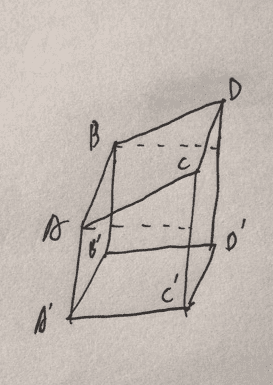

2020, XIII Samara Regional Intercollegiate Programming Contest
Contents
Contest Info
| Solved | A | B | C | D | E | F | G | H | I | J | K | L | M |
|---|---|---|---|---|---|---|---|---|---|---|---|---|---|
| 13/13 | O | O | O | O | O | O | O | O | O | O | O | O | O |
- O 在比赛中通过
- Ø 赛后通过
- ! 尝试了但是失败了
- . 没有尝试
Solutions
A. Array’s Hash
Solved By Hsueh-. 0:29(+)
题意：
- 给定一个序列，每次将
和 拿出来，然后将 插入到序列中，问最后的序列结果。 - 但是现在有
次操作，每次将 区间内所有数字加上 .
思路：
- 如果
是奇数，答案是奇数位置的和减去偶数位置的和，如果 是偶数，则相反。 - 那么对于每个操作统计有多少个技术位置和偶数位置，加加减减乘乘就好了。
Code
#include <bits/stdc++.h>
using namespace std;
using ll = long long;
const int N = 5e5 + 10;
int n, q;
ll a[N];
int main() {
scanf("%d", &n);
for (int i = 1; i <= n; ++i) {
scanf("%lld", a + i);
}
ll res = 0;
for (int i = 1; i <= n; ++i) {
if (i % 2 == n % 2) {
res += a[i];
} else {
res -= a[i];
}
}
scanf("%d", &q);
for (int _q = 1, l, r, v; _q <= q; ++_q) {
scanf("%d %d %d", &l, &r, &v);
int even = r / 2 - (l - 1) / 2;
int odd = r - l + 1 - even;
if (n & 1) {
res += 1ll * (odd - even) * v;
} else {
res += 1ll * (even - odd) * v;
}
printf("%lld\n", res);
}
return 0;
}
B. Bonuses on a Line
Solved By Dup4. 0:18(+)
题意：
有
思路：
只会转向一次，讨论一下即可。
Code
#include <bits/stdc++.h>
using namespace std;
using ll = long long;
#define SZ(x) (int(x.size()))
const int N = 2e6 + 10;
int n, t, x[N];
void chmax(int &x, int y) {
if (x < y)
x = y;
}
int main() {
scanf("%d%d", &n, &t);
vector<int> A, B;
for (int i = 1; i <= n; ++i) {
scanf("%d", x + i);
if (x[i] <= 0)
A.push_back(x[i]);
else if (x[i] > 0)
B.push_back(x[i]);
}
int res = 0;
for (int i = 0; i < SZ(A); ++i) {
if (abs(A[i]) > t)
continue;
ll need = abs(A[i]);
chmax(res, SZ(A) - i);
if (need * 2 <= t) {
ll remind = t - need * 2;
int pos = upper_bound(B.begin(), B.end(), remind) - B.begin();
chmax(res, SZ(A) - i + pos);
}
}
for (auto &it : A) {
it = -it;
}
sort(A.begin(), A.end());
for (int i = 0; i < SZ(B); ++i) {
if (B[i] > t)
continue;
ll need = B[i];
chmax(res, i + 1);
if (need * 2 <= t) {
ll remind = t - need * 2;
int pos = upper_bound(A.begin(), A.end(), remind) - A.begin();
chmax(res, i + 1 + pos);
}
}
printf("%d\n", res);
return 0;
}
C. Manhattan Distance
Solved By Dup4. 3:53(+2)
题意：
给出
思路：
- 二分权值，转化成计数问题。
- 将曼哈顿距离转化成切比雪夫距离，转化成矩形框内的计数问题。
- 时间复杂度
，其中 为距离的范围。 - 需要卡常，注意到有单调性，可以适当的一些排序操作转化成有序表的合并。
Code
#include <bits/stdc++.h>
#define fi first
#define se second
#define SZ(x) (int(x.size()))
using namespace std;
#define dbg(x...) \
do { \
cout << "\033[32;1m" << #x << " -> "; \
err(x); \
} while (0)
void err() {
cout << "\033[39;0m" << endl;
}
template <class T, class... Ts>
void err(const T& arg, const Ts&... args) {
cout << arg << ' ';
err(args...);
}
using ll = long long;
using pII = pair<int, int>;
const int N = 4e5 + 10;
int n;
pII p[N];
ll K;
int a[N];
struct Hash {
int a[N];
int size() {
return *a;
}
void init() {
*a = 0;
}
void add(int x) {
a[++*a] = x;
}
void gao() {
sort(a + 1, a + 1 + *a);
*a = unique(a + 1, a + 1 + *a) - a - 1;
}
int get(int x) {
return lower_bound(a + 1, a + 1 + *a, x) - a;
}
} hy;
struct BIT {
int a[N], n;
void init(int _n) {
n = _n;
memset(a, 0, sizeof(a[0]) * (n + 5));
}
void update(int x, int v) {
for (; x <= n; x += x & -x) a[x] += v;
}
int query(int x) {
int res = 0;
for (; x; x -= x & -x) res += a[x];
return res;
}
int query(int l, int r) {
return query(r) - query(l - 1);
}
} bit;
struct E {
int op, x, l, r;
inline bool operator<(const E& other) const {
return x < other.x;
}
};
inline int get(int x) {
return lower_bound(a + 1, a + 1 + *a, x) - a;
}
E A[N], B[N], vec[N];
inline ll calc(int dis) {
ll res = 0;
*a = 0;
for (int i = 1; i <= n; ++i) {
a[++*a] = p[i].se;
a[++*a] = p[i].se - dis;
a[++*a] = p[i].se + dis;
}
sort(a + 1, a + 1 + *a);
*a = unique(a + 1, a + 1 + *a) - a - 1;
int m = *a;
int cA = 0, cB = 0, cVec = 0;
for (int i = n; i >= 1; --i) {
int l = get(p[i].se - dis), r = get(p[i].se + dis);
A[++cA] = {-1, p[i].fi - dis - 1, l, r};
B[++cB] = {1, p[i].fi + dis, l, r};
}
for (int i = 1, sze = n * 2; i <= sze; ++i) {
if (!cA)
vec[++cVec] = B[cB--];
else if (!cB)
vec[++cVec] = A[cA--];
else if (A[cA].x < B[cB].x) {
vec[++cVec] = A[cA--];
} else {
vec[++cVec] = B[cB--];
}
}
int pos = 0;
bit.init(m);
for (int i = 1; i <= cVec; ++i) {
while (pos < n && p[pos + 1].fi <= vec[i].x) {
++pos;
bit.update(get(p[pos].se), 1);
}
res += bit.query(vec[i].l, vec[i].r) * vec[i].op;
}
res -= n;
res /= 2;
return res;
}
int main() {
scanf("%d%lld", &n, &K);
for (int i = 1, _x, _y; i <= n; ++i) {
scanf("%d%d", &_x, &_y);
p[i].fi = _x + _y;
p[i].se = _x - _y;
}
sort(p + 1, p + 1 + n);
// for (int i = 1; i <= n; ++i)
// dbg(i, p[i].fi, p[i].se);
int l = 0, r = 4e8, res = 0;
while (r - l >= 0) {
int mid = (l + r) >> 1;
if (calc(mid) >= K) {
res = mid;
r = mid - 1;
} else {
l = mid + 1;
}
}
printf("%d\n", res);
return 0;
}
D. Lexicographically Minimal Shortest Path
Solved By Hsueh-. 1:48(+)
题意：
有
思路：
- 从
出发跑一个最短路，然后再从 出发，每次去找是最短路同时字母最小的，如果有多个最小的，那就用 vector 存起来，每个节点都跑一次。 - 由于是分层图，每个点只会被放在 vector 里面一次，所以复杂度为
。
Code
#include <bits/stdc++.h>
using namespace std;
#define dbg(x...) \
do { \
cout << #x << " -> "; \
err(x); \
} while (0)
void err() {
cout << endl;
}
template <class T, class... Ts>
void err(const T& arg, const Ts&... args) {
cout << arg << ' ';
err(args...);
}
using pIC = pair<int, char>;
const int N = 2e5 + 10;
int n, m;
vector<vector<pIC>> G;
vector<int> vec[2];
int pre[N];
int d[N];
char s[N];
int pos[N];
int main() {
memset(d, -1, sizeof d);
scanf("%d %d", &n, &m);
G.resize(n + 1);
for (int i = 1; i <= m; ++i) {
int u, v;
char c;
scanf("%d %d %c", &u, &v, &c);
G[u].push_back(pIC(v, c));
G[v].push_back(pIC(u, c));
}
queue<int> q;
d[n] = 0;
q.push(n);
while (!q.empty()) {
int u = q.front();
q.pop();
for (auto it : G[u]) {
int v = it.first;
if (d[v] == -1) {
d[v] = d[u] + 1;
q.push(v);
}
}
}
vec[0].push_back(1);
for (int cas = 1; cas <= d[1]; ++cas) {
char Max = 'z' + 1;
for (auto u : vec[0]) {
for (auto it : G[u]) {
if (d[u] == d[it.first] + 1 && it.second < Max) {
Max = it.second;
}
}
}
vec[1].clear();
for (auto u : vec[0]) {
for (auto it : G[u]) {
if (d[u] == d[it.first] + 1 && it.second == Max) {
pre[it.first] = u;
vec[1].push_back(it.first);
}
}
}
sort(vec[1].begin(), vec[1].end());
vec[1].resize(unique(vec[1].begin(), vec[1].end()) - vec[1].begin());
swap(vec[0], vec[1]);
s[cas] = Max;
}
s[d[1] + 1] = 0;
int u = n, cnt = 0;
while (true) {
pos[++cnt] = u;
if (u == 1)
break;
u = pre[u];
}
reverse(pos + 1, pos + 1 + cnt);
printf("%d\n", d[1]);
for (int i = 1; i <= cnt; ++i) {
printf("%d%c", pos[i], " \n"[i == cnt]);
}
puts(s + 1);
return 0;
}
E. Fluctuations of Mana
Solved By Hsueh-. 0:15(+1)
题意：
有
思路：
统计前缀和，然后看最小的负值，那么刚开始法力值就要为最小的负数的相反数。
Code
#include <bits/stdc++.h>
using namespace std;
using ll = long long;
const int N = 5e5 + 10;
int n;
ll a[N];
int main() {
scanf("%d", &n);
for (int i = 1; i <= n; ++i) {
scanf("%lld", a + i);
a[i] += a[i - 1];
}
ll res = 0;
for (int i = 1; i <= n; ++i) {
if (a[i] <= 0) {
res = max(res, -a[i]);
}
}
printf("%lld\n", res);
return 0;
}
F. Moving Target
Solved By Hsueh-. 0:54(+)
题意：
- 有
个窗户，有一个目标在某一个窗户后面，但是并不知道在哪个窗户后面。 - 现在可以射击，如果没有击中，并且目标不在第
个窗户后面，那么目标会往右边移动一个窗户的位置，问最少的射击次数保证不管目标在哪儿，都能将他击中。 - 给出射击的位置序列。
思路：
为什么只射击
Code
G. Nuts and Bolts
Solved By Hsueh- & ltslts. 3:00(+)
题意：
- 有
个 A物品，和个 B物品，所有的A物品的大小为且两两不同， B物品亦如此。 - 但是并不知道第
个物品的大小，可以询问 次，每次询问给出 ，根据第 个 A物品和第个 B物品的大小关系返回<,=,>三种结果。 - 最后要输出一个排列，表示第
个 A物品和第个 B物品的大小相同。
思路：
类似于快排，每次将
Code
#include <bits/stdc++.h>
using namespace std;
const int N = 1e3 + 10;
#define dbg(x...) \
do { \
cout << #x << " -> "; \
err(x); \
} while (0)
void err() {
cout << endl;
}
template <class T, class... Ts>
void err(const T& arg, const Ts&... args) {
cout << arg << ' ';
err(args...);
}
mt19937 rnd(time(0));
// int cnt;
int ask(int x, int y) {
// cnt++;
// if (x > y)
// return 1;
// else if (x < y)
// return -1;
// else
// return 0;
printf("? %d %d\n", x, y);
fflush(stdout);
char c;
scanf(" %c", &c);
if (c == '>')
return 1;
else if (c == '<')
return -1;
else
return 0;
}
int n;
int res[N];
void gao(vector<int> L, vector<int> R) {
// dbg(L.size(), R.size());
if (L.empty())
return;
if (L.size() == 1) {
res[L[0]] = R[0];
return;
}
int pos = rnd() % L.size();
vector<int> rl, rr;
int cur = 0;
for (auto it : R) {
int op = ask(L[pos], it);
if (op == -1) {
rl.push_back(it);
} else if (op == 1) {
rr.push_back(it);
} else {
cur = it;
}
}
// dbg(cur, pos);
vector<int> ll, lr;
for (auto it : L) {
if (it == L[pos])
continue;
int op = ask(it, cur);
if (op == -1)
lr.push_back(it);
else
ll.push_back(it);
}
res[L[pos]] = cur;
gao(ll, rl);
gao(lr, rr);
}
vector<int> a, b;
int main() {
scanf("%d", &n);
for (int i = 1; i <= n; ++i) {
a.push_back(i);
b.push_back(i);
}
gao(a, b);
// assert(cnt <= 5 * n * log2(n));
printf("! ");
for (int i = 1; i <= n; ++i) {
printf("%d%c", res[i], " \n"[i == n]);
}
fflush(stdout);
return 0;
}
H. Tree Painting
Solved By All. 0:23(+)
题意：
给出一棵树，每次能够选择两个节点，将这两个节点之间的简单路径上的所有点和边都涂色，问最少几次操作能够将这棵树的所有点和边都涂色。
思路：
答案为
Code
I. Sorting Colored Array
Solved By Dup4 & ltslts. 0:32(+)
题意：
有
思路：
显然同一种颜色的数字的相对位置不会改变，不用颜色的可以任意交换，那么只需要判断每一种颜色对应的子序列是否为升序即可。
Code
#include <bits/stdc++.h>
using namespace std;
const int N = 2e5 + 10;
int n;
int main() {
scanf("%d", &n);
vector<int> vec[N];
for (int i = 1, a, c; i <= n; ++i) {
scanf("%d%d", &a, &c);
vec[c].push_back(a);
}
int ok = 1;
for (auto &it : vec)
if (!it.empty()) {
int pre = -2e9;
for (auto &v : it) {
if (pre > v) {
ok = 0;
break;
}
pre = v;
}
}
puts(ok ? "YES" : "NO");
return 0;
}
J. The Battle of Mages
Solved By Hsueh- & ltslts. 2:06(+)
题意：
构造两个长度为
思路：
快乐打表题。
Code
打表代码
#include <bits/stdc++.h>
using namespace std;
bool ok1(vector<int> v1, vector<int> v2) {
int cnt = 0;
for (auto it1 : v1) {
for (auto it2 : v2) {
if (it1 > it2) {
cnt++;
}
if (it1 < it2) {
cnt--;
}
}
}
return cnt > 0;
}
bool ok2(vector<int> v1, vector<int> v2) {
int cnt = 0;
for (int i = 0, len1 = v1.size(); i < len1; ++i) {
for (int j = 0, len2 = v2.size(); j < len2; ++j) {
for (int ii = i + 1; ii < len1; ++ii) {
for (int jj = j + 1; jj < len2; ++jj) {
if (v1[i] + v1[ii] > v2[j] + v2[jj]) {
cnt++;
}
if (v1[i] + v1[ii] < v2[j] + v2[jj]) {
cnt--;
}
}
}
}
}
return cnt < 0;
}
bool ok3(vector<int> v1, vector<int> v2) {
int cnt = 0;
for (int i = 0; i < v1.size(); ++i) {
for (int j = 0; j < v2.size(); ++j) {
for (int ii = i + 1; ii < v1.size(); ++ii) {
for (int jj = j + 1; jj < v2.size(); ++jj) {
for (int iii = ii + 1; iii < v1.size(); ++iii) {
for (int jjj = jj + 1; jjj < v2.size(); ++jjj) {
if (v1[i] + v1[ii] + v1[iii] > v2[j] + v2[jj] + v2[jjj]) {
cnt++;
}
if (v1[i] + v1[ii] + v1[iii] < v2[j] + v2[jj] + v2[jjj]) {
cnt--;
}
}
}
}
}
}
}
return cnt > 0;
}
mt19937 rnd(time(0));
int main() {
while (true) {
vector<int> v1, v2;
for (int i = 1; i <= 10; ++i) {
if (rnd() % 2 == 0) {
v1.push_back(i);
}
if (rnd() % 2 == 0) {
v2.push_back(i);
}
}
if (v1.size() < 3 || v2.size() < 3)
continue;
if (ok1(v1, v2) && ok2(v1, v2) && ok3(v1, v2)) {
cout << "ok" << endl;
for (auto it : v1) {
cout << it << " ";
}
cout << endl;
for (auto it : v2) {
cout << it << " ";
}
cout << endl;
system("pause");
}
}
return 0;
}
K. Table
Solved By ltslts. 1:14(+)
题意：
给出一个桌子的4条桌腿长度，要求桌腿安装垂直于桌面，并且桌腿在桌面的投影为一个矩形的4个顶点，判断可否使得桌子稳定站立（桌面可以倾斜）
思路：

- 以桌面为底面，只要使得
四点共面，桌子即可稳定。 - 因为底面的四边形为矩形，所以只要证明
或者 即可证明四边形 是平行四边形。
Code
L. The Dragon Land
Solved By Hsueh- & ltslts. 0:59(+)
题意：
- 有
只恐龙，打败第 只恐龙可以获得 的金币，但是要扣除花费，花费为你已经击败过的恐龙个数 ，这里是先加上金币，再扣除花费。 - 按顺序打恐龙，每次可以选择打或者不打，问最大收益。
思路：
- 很显然顺序是随意的，因为打的恐龙一样，收益一样，个数一样，所以最终结果一样。
- 对恐龙排序，找最大的几个打。
Code
#include <bits/stdc++.h>
using namespace std;
using ll = long long;
const int N = 2e5 + 10;
int n;
ll a[N];
int main() {
scanf("%d", &n);
for (int i = 1; i <= n; ++i) {
scanf("%lld", a + i);
}
sort(a + 1, a + 1 + n);
ll res = 0;
for (int i = n, j = 1; i >= 1; --i, ++j) {
res += max(0ll, 1ll * a[i] - j);
}
printf("%lld\n", res);
return 0;
}
M. Notifications
Solved By Hsueh-. 0:39(+)
题意：
- 有
个任务，每个任务有到达时间和持续时间，为需要多久才能完成所有任务。
思路：
- 模拟。
Code
#include <bits/stdc++.h>
using namespace std;
using ll = long long;
const int N = 2e5 + 10;
int n;
int t[N], d[N];
int main() {
scanf("%d", &n);
for (int i = 1; i <= n; ++i) {
scanf("%d %d", t + i, d + i);
}
ll res = 0;
int pos = 1;
priority_queue<int, vector<int>, greater<int>> q;
while (true) {
if (pos > n && q.empty())
break;
while (pos <= n && t[pos] <= res) {
q.push(d[pos]);
pos++;
}
if (!q.empty()) {
res += q.top();
q.pop();
} else {
res = t[pos];
}
}
printf("%lld\n", res);
return 0;
}
Created: March 27, 2022